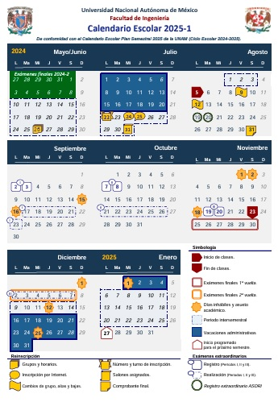

SEMESTRE 2026-2

Ver


SEMESTRE 2026-2
CALENDARIO DE PRÁCTICAS
ASIGNACIÓN DE PROFESORES
FODO-06
VerPRÁCTICAS DE TOPOGRAFÍA I
PRÁCTICAS DE TOPOGRAFÍA II
PRÁCTICAS DE GEOMÁTICA BÁSICA
FODO-22
ENCUESTAS ALUMN@S
Clases (Modalidad presencial)
FODO-26
Quejas, sugerencias y felicitaciones
Ver